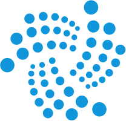

AIoT · 2026
AIoT
技术与实践
—— 从物联网平台到智能体应用
●
五层架构 · 智能层 · 物联网平台底座
●
大模型 · Agent · MCP · Tool-Calling · 自然语言运维
●
IoT DC3 开源项目贯穿全书
●
14 章 · 73 张架构图 · 工程方法论
张红元
IoT DC3 开源作者 · 高级工程师 · 架构师
从连接到智能
Connecting to Intelligence